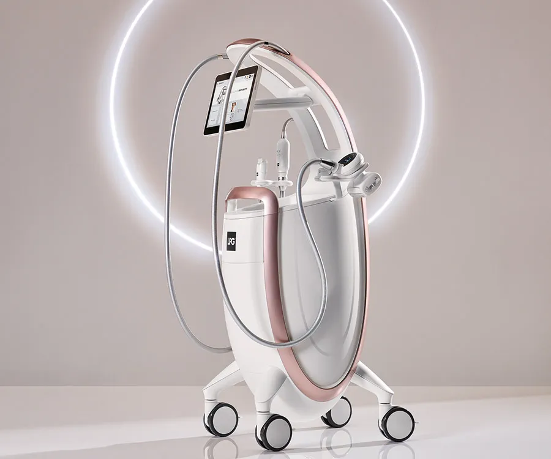

LPG Séance INFINITY
La séance LPG signature : travail mécanique ciblé sur vos zones prioritaires pour réactiver les cellules graisseuses et drainer les tissus.
70 € — 35 min
La cellulite résiste au sport, à l'alimentation, aux crèmes. Le LPG endermologie, lui, agit directement sur les cellules graisseuses et le tissu conjonctif — par voie mécanique, sans injection, sans chirurgie. Des résultats mesurables dès la 3e séance chez Elema'Beauté à Rives, en Isère.

Le sport brûle des calories. Le régime réduit le volume. Mais ni l'un ni l'autre ne cible les cellules adipeuses enkystées sous la peau — celles qui forment la peau d'orange et les capitons. Le LPG endermologie envoie un signal mécanique précis à ces cellules pour les réactiver. Résultat : moins de capitons, peau plus ferme, jambes plus légères.
Chez Elema'Beauté à Rives, chaque cure est construite selon vos zones prioritaires et vos objectifs : cuisses, ventre, bras, dos, fessier. À partir de 10 séances, à raison de 2 par semaine, les résultats s'installent durablement — et se voient sur les zones travaillées.
La séance LPG signature : travail mécanique ciblé sur vos zones prioritaires pour réactiver les cellules graisseuses et drainer les tissus.
70 € — 35 min
Protocole de drainage profond pour éliminer les toxines, désengorger les tissus et retrouver des jambes légères.
80 € — 50 min
Séance LPG orientée bien-être global : agit sur les tensions, la récupération et la qualité du sommeil.
80 € — 50 min
Récupération musculaire profonde avec le LPG Infinity. Idéal après un effort sportif ou une période intense.
100 € — 60 min
Les premières différences apparaissent généralement entre la 3e et la 4e séance — jambes plus légères, peau plus lisse au toucher. Une cure complète de 10 à 12 séances (1 à 2 par semaine) donne les résultats les plus durables. On peut ensuite passer en entretien avec une séance par mois.
Non. Le LPG, c'est une aspiration et un roulement mécanique sur la peau — une sensation surprenante la première fois, mais tout à fait indolore. Certaines clientes s'endorment pendant la séance. Si une zone est plus sensible, on ajuste l'intensité immédiatement.
Une combinaison intégrale fine vous est prêtée à chaque séance — elle permet au système LPG de glisser sur la peau sans l'irriter. Prévoyez des sous-vêtements confortables, c'est tout.
Le LPG agit sur la cellulite et le tissu conjonctif — pas sur le poids. Une alimentation équilibrée et une activité physique régulière amplifient et prolongent les résultats. Mais même sans changement alimentaire, la peau d'orange et les capitons répondent bien au traitement sur les zones ciblées.
La meilleure façon de découvrir le LPG. Vous repartez avec une idée claire des sensations et des premiers effets. Réservez en ligne sur Planity, disponible du mardi au samedi à Rives.
Réserver ma séance LPG